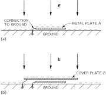
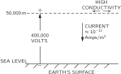
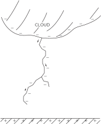

9. Electricity in the Atmosphere
9–1 The electric potential gradient of the atmosphere#
On an ordinary day over flat desert country, or over the sea, as one goes upward from the surface of the ground the electric potential increases by about 100 volts per meter. Thus there is a vertical electric field \mathbf{E} of 100 volts/m in the air. The sign of the field corresponds to a negative charge on the earth’s surface. This means that outdoors the potential at the height of your nose is 200 volts higher than the potential at your feet! You might ask: “Why don’t we just stick a pair of electrodes out in the air one meter apart and use the 100 volts to power our electric lights?” Or you might wonder: “If there is really a potential difference of 200 volts between my nose and my feet, why is it I don’t get a shock when I go out into the street?”
We will answer the second question first. Your body is a relatively good conductor. If you are in contact with the ground, you and the ground will tend to make one equipotential surface. Ordinarily, the equipotentials are parallel to the surface, as shown in Fig. 9–1 (a), but when you are there, the equipotentials are distorted, and the field looks somewhat as shown in Fig. 9–1 (b). So you still have very nearly zero potential difference between your head and your feet. There are charges that come from the earth to your head, changing the field. Some of them may be discharged by ions collected from the air, but the current of these is very small because air is a poor conductor.

How can we measure such a field if the field is changed by putting something there? There are several ways. One way is to place an insulated conductor at some distance above the ground and leave it there until it is at the same potential as the air. If we leave it long enough, the very small conductivity in the air will let the charges leak off (or onto) the conductor until it comes to the potential at its level. Then we can bring it back to the ground, and measure the shift of its potential as we do so. A faster way is to let the conductor be a bucket of water with a small leak. As the water drops out, it carries away any excess charges and the bucket will approach the same potential as the air. (The charges, as you know, reside on the surface, and as the drops come off “pieces of surface” break off.) We can measure the potential of the bucket with an electrometer.

There is another way to directly measure the potential gradient. Since there is an electric field, there is a surface charge on the earth ( \sigma=\epsilon_0 E). If we place a flat metal plate at the earth’s surface and ground it, negative charges appear on it (Fig. 9–2 a). If this plate is now covered by another grounded conducting cover B, the charges will appear on the cover, and there will be no charges on the original plate A. If we measure the charge that flows from plate A to the ground (by, say, a galvanometer in the grounding wire) as we cover it, we can find the surface charge density that was there, and therefore also find the electric field.
Having suggested how we can measure the electric field in the atmosphere, we now continue our description of it. Measurements show, first of all, that the field continues to exist, but gets weaker, as one goes up to high altitudes. By about 50 kilometers, the field is very small, so most of the potential change (the integral of E) is at lower altitudes. The total potential difference from the surface of the earth to the top of the atmosphere is about 400{,}000 volts.
9–2 Electric currents in the atmosphere#
Another thing that can be measured, in addition to the potential gradient, is the current in the atmosphere. The current density is small—about 10 micromicroamperes crosses each square meter parallel to the earth. The air is evidently not a perfect insulator, and because of this conductivity, a small current—caused by the electric field we have just been describing—passes from the sky down to the earth.
Why does the atmosphere have conductivity? Here and there among the air molecules there is an ion—a molecule of oxygen, say, which has acquired an extra electron, or perhaps lost one. These ions do not stay as single molecules; because of their electric field they usually accumulate a few other molecules around them. Each ion then becomes a little lump which, along with other lumps, drifts in the field—moving slowly upward or downward—making the observed current. Where do the ions come from? It was first guessed that the ions were produced by the radioactivity of the earth. (It was known that the radiation from radioactive materials would make air conducting by ionizing the air molecules.) Particles like \beta -rays coming out of the atomic nuclei are moving so fast that they tear electrons from the atoms, leaving ions behind. This would imply, of course, that if we were to go to higher altitudes, we should find less ionization, because the radioactivity is all in the dirt on the ground—in the traces of radium, uranium, potassium, etc.

To test this theory, some physicists carried an experiment up in balloons to measure the ionization of the air (Hess, in 1912) and discovered that the opposite was true—the ionization per unit volume increased with altitude! (The apparatus was like that of Fig. 9–3. The two plates were charged periodically to the potential V. Due to the conductivity of the air, the plates slowly discharged; the rate of discharge was measured with the electrometer.) This was a most mysterious result—the most dramatic finding in the entire history of atmospheric electricity. It was so dramatic, in fact, that it required a branching off of an entirely new subject—cosmic rays. Atmospheric electricity itself remained less dramatic. Ionization was evidently being produced by something from outside the earth; the investigation of this source led to the discovery of the cosmic rays. We will not discuss the subject of cosmic rays now, except to say that they maintain the supply of ions. Although the ions are being swept away all the time, new ones are being created by the cosmic-ray particles coming from the outside.
To be precise, we must say that besides the ions made of molecules, there are also other kinds of ions. Tiny pieces of dirt, like extremely fine bits of dust, float in the air and become charged. They are sometimes called “nuclei.” For example, when a wave breaks in the sea, little bits of spray are thrown into the air. When one of these drops evaporates, it leaves an infinitesimal crystal of NaCl floating in the air. These tiny crystals can then pick up charges and become ions; they are called “large ions.”
The small ions—those formed by cosmic rays—are the most mobile. Because they are so small, they move rapidly through the air—with a speed of about 1 cm/sec in a field of 100 volts/meter, or 1 volt/cm. The much bigger and heavier ions move much more slowly. It turns out that if there are many “nuclei,” they will pick up the charges from the small ions. Then, since the “large ions” move so slowly in a field, the total conductivity is reduced. The conductivity of air, therefore, is quite variable, since it is very sensitive to the amount of “dirt” there is in it. There is much more of such dirt over land—where the winds can blow up dust or where man throws all kinds of pollution into the air—than there is over water. It is not surprising that from day to day, from moment to moment, from place to place, the conductivity near the earth’s surface varies enormously. The voltage gradient observed at any particular place on the earth’s surface also varies greatly because roughly the same current flows down from high altitudes in different places, and the varying conductivity near the earth results in a varying voltage gradient.
The conductivity of the air due to the drifting of ions also increases rapidly with altitude—for two reasons. First of all, the ionization from cosmic rays increases with altitude. Secondly, as the density of air goes down, the mean free path of the ions increases, so that they can travel farther in the electric field before they have a collision—resulting in a rapid increase of conductivity as one goes up.
Although the electric current-density in the air is only a few micromicroamperes per square meter, there are very many square meters on the earth’s surface. The total electric current reaching the earth’s surface at any time is very nearly constant at 1800 amperes. This current, of course, is “positive”—it carries plus charges to the earth. So we have a voltage supply of 400{,}000 volts with a current of 1800 amperes—a power of 700 megawatts!
With such a large current coming down, the negative charge on the earth should soon be discharged. In fact, it should take only about half an hour to discharge the entire earth. But the atmospheric electric field has already lasted more than a half-hour since its discovery. How is it maintained? What maintains the voltage? And between what and the earth? There are many questions.

The earth is negative, and the potential in the air is positive. If you go high enough, the conductivity is so great that horizontally there is no more chance for voltage variations. The air, for the scale of times that we are talking about, becomes effectively a conductor. This occurs at a height in the neighborhood of 50 kilometers. This is not as high as what is called the “ionosphere,” in which there are very large numbers of ions produced by photoelectricity from the sun. Nevertheless, for our discussions of atmospheric electricity, the air becomes sufficiently conductive at about 50 kilometers that we can imagine that there is practically a perfect conducting surface at this height, from which the currents come down. Our picture of the situation is shown in Fig. 9–4. The problem is: How is the positive charge maintained there? How is it pumped back? Because if it comes down to the earth, it has to be pumped back somehow. That was one of the greatest puzzles of atmospheric electricity for quite a while.

Each piece of information we can get should give a clue or, at least, tell you something about it. Here is an interesting phenomenon: If we measure the current (which is more stable than the potential gradient) over the sea, for instance, or in careful conditions, and average very carefully so that we get rid of the irregularities, we discover that there is still a daily variation. The average of many measurements over the oceans has a variation with time roughly as shown in Fig. 9–5. The current varies by about \pm15 percent, and it is largest at 7:00 p.m. in London. The strange part of the thing is that no matter where you measure the current—in the Atlantic Ocean, the Pacific Ocean, or the Arctic Ocean—it is at its peak value when the clocks in London say 7:00 p.m.! All over the world the current is at its maximum at 7:00 p.m. London time and it is at a minimum at 4:00 a.m. London time. In other words, it depends upon the absolute time on the earth, not upon the local time at the place of observation. In one respect this is not mysterious; it checks with our idea that there is a very high conductivity laterally at the top, because that makes it impossible for the voltage difference from the ground to the top to vary locally. Any potential variations should be worldwide, as indeed they are. What we now know, therefore, is that the voltage at the “top” surface is dropping and rising by 15 percent with the absolute time on the earth.
9–3 Origin of the atmospheric currents#
We must next talk about the source of the large negative currents which must be flowing from the “top” to the surface of the earth to keep charging it up negatively. Where are the batteries that do this? The “battery” is shown in Fig. 9–6. It is the thunderstorm and its lightning. It turns out that the bolts of lightning do not “discharge” the potential we have been talking about (as you might at first guess). Lightning storms carry negative charges to the earth. When a lightning bolt strikes, nine times out of ten it brings down negative charges to the earth in large amounts. It is the thunderstorms throughout the world that are charging the earth with an average of 1800 amperes, which is then being discharged through regions of fair weather.
![Fig. 9–6.The mechanism that generates atmospheric electric field. [Photo by William L. Widmayer.]](../images/Ch9-F6.jpg)
There are about 40{,}000 thunderstorms per day all over the earth, and we can think of them as batteries pumping the electricity to the upper layer and maintaining the voltage difference. Then take into account the geography of the earth—there are thunderstorms in the afternoon in Brazil, tropical thunderstorms in Africa, and so forth. People have made estimates of how much lightning is striking world-wide at any time, and perhaps needless to say, their estimates more or less agree with the voltage difference measurements: the total amount of thunderstorm activity is highest on the whole earth at about 7:00 p.m. in London. However, the thunderstorm estimates are very difficult to make and were made only after it was known that the variation should have occurred. These things are very difficult because we don’t have enough observations on the seas and over all parts of the world to know the number of thunderstorms accurately. But those people who think they “do it right” obtain the result that there are about 100 lightning flashes per second world-wide with a peak in the activity at 7:00 p.m. Greenwich Mean Time.
In order to understand how these batteries work, we will look at a thunderstorm in detail. What is going on inside a thunderstorm? We will describe this insofar as it is known. As we get into this marvelous phenomenon of real nature—instead of the idealized spheres of perfect conductors inside of other spheres that we can solve so neatly—we discover that we don’t know very much. Yet it is really quite exciting. Anyone who has been in a thunderstorm has enjoyed it, or has been frightened, or at least has had some emotion. And in those places in nature where we get an emotion, we find that there is generally a corresponding complexity and mystery about it. It is not going to be possible to describe exactly how a thunderstorm works, because we do not yet know very much. But we will try to describe a little bit about what happens.
9–4 Thunderstorms#
![Fig. 9–7.A thunderstorm cell in the early stages of development. [From U.S. Department of Commerce Weather Bureau Report, June 1949.]](../images/Ch9-F7.svg)
In the first place, an ordinary thunderstorm is made up of a number of “cells” fairly close together, but almost independent of each other. So it is best to analyze one cell at a time. By a “cell” we mean a region with a limited area in the horizontal direction in which all of the basic processes occur. Usually there are several cells side by side, and in each one about the same thing is happening, although perhaps with a different timing. Figure 9–7 indicates in an idealized fashion what such a cell looks like in the early stage of the thunderstorm. It turns out that in a certain place in the air, under certain conditions which we shall describe, there is a general rising of the air, with higher and higher velocities near the top. As the warm, moist air at the bottom rises, it cools and the water vapor in it condenses. In the figure the little stars indicate snow and the dots indicate rain, but because the updraft currents are great enough and the drops are small enough, the snow and rain do not come down at this stage. This is the beginning stage, and not the real thunderstorm yet—in the sense that we don’t have anything happening at the ground. At the same time that the warm air rises, there is an entrainment of air from the sides—an important point which was neglected for many years. Thus it is not just the air from below which is rising, but also a certain amount of other air from the sides.
Why does the air rise like this? As you know, when you go up in altitude the air is colder. The ground is heated by the sun, and the re-radiation of heat to the sky comes from water vapor high in the atmosphere; so at high altitudes the air is cold—very cold—whereas lower down it is warm. You may say, “Then it’s very simple. Warm air is lighter than cold; therefore the combination is mechanically unstable and the warm air rises.” Of course, if the temperature is different at different heights, the air is unstable thermodynamically. Left to itself infinitely long, the air would all come to the same temperature. But it is not left to itself; the sun is always shining (during the day). So the problem is indeed not one of thermodynamic equilibrium, but of mechanical equilibrium. Suppose we plot—as in Fig. 9–8 —the temperature of the air against height above the ground. In ordinary circumstances we would get a decrease along a curve like the one labeled (a); as the height goes up, the temperature goes down. How can the atmosphere be stable? Why doesn’t the hot air below simply rise up into the cold air? The answer is this: if the air were to go up, its pressure would go down, and if we consider a particular parcel of air going up, it would be expanding adiabatically. (There would be no heat coming in or out because in the large dimensions considered here, there isn’t time for much heat flow.) Thus the parcel of air would cool as it rises. Such an adiabatic process would give a temperature-height relationship like curve (b) in Fig. 9–8. Any air which rose from below would be colder than the environment it goes into. Thus there is no reason for the hot air below to rise; if it were to rise, it would cool to a lower temperature than the air already there, would be heavier than the air there, and would just want to come down again. On a good, bright day with very little humidity there is a certain rate at which the temperature in the atmosphere falls, and this rate is, in general, lower than the “maximum stable gradient,” which is represented by curve (b). The air is in stable mechanical equilibrium.

On the other hand, if we think of a parcel of air that contains a lot of water vapor being carried up into the air, its adiabatic cooling curve will be different. As it expands and cools, the water vapor in it will condense, and the condensing water will liberate heat. Moist air, therefore, does not cool nearly as much as dry air does. So if air that is wetter than the average starts to rise, its temperature will follow a curve like (c) in Fig. 9–8. It will cool off somewhat, but will still be warmer than the surrounding air at the same level. If we have a region of warm moist air and something starts it rising, it will always find itself lighter and warmer than the air around it and will continue to rise until it gets to enormous heights. This is the machinery that makes the air in the thunderstorm cell rise.
For many years the thunderstorm cell was explained simply in this manner. But then measurements showed that the temperature of the cloud at different heights was not nearly as high as indicated by curve (c). The reason is that as the moist air “bubble” goes up, it entrains air from the environment and is cooled off by it. The temperature-versus-height curve looks more like curve (d), which is much closer to the original curve (a) than to curve (c).
![Fig. 9–9.A mature thunderstorm cell. [From U.S. Department of Commerce Weather Bureau Report, June 1949.]](../images/Ch9-F9.svg)
After the convection just described gets under way, the cross section of a thunderstorm cell looks like Fig. 9–9. We have what is called a “mature” thunderstorm. There is a very rapid updraft which, in this stage, goes up to about 10{,}000 to 15{,}000 meters—sometimes even much higher. The thunderheads, with their condensation, climb way up out of the general cloud bank, carried by an updraft that is usually about 60 miles an hour. As the water vapor is carried up and condenses, it forms tiny drops which are rapidly cooled to temperatures below zero degrees. They should freeze, but do not freeze immediately—they are “supercooled.” Water and other liquids will usually cool well below their freezing points before crystallizing if there are no “nuclei” present to start the crystallization process. Only if there is some small piece of material present, like a tiny crystal of NaCl, will the water drop freeze into a little piece of ice. Then the equilibrium is such that the water drops evaporate and the ice crystals grow. Thus at a certain point there is a rapid disappearance of the water and a rapid buildup of ice. Also, there may be direct collisions between the water drops and the ice—collisions in which the supercooled water becomes attached to the ice crystals, which causes it to suddenly crystallize. So at a certain point in the cloud expansion there is a rapid accumulation of large ice particles.
When the ice particles are heavy enough, they begin to fall through the rising air—they get too heavy to be supported any longer in the updraft. As they come down, they draw a little air with them and start a downdraft. And surprisingly enough, it is easy to see that once the downdraft is started, it will maintain itself. The air now drives itself down!
Notice that the curve (d) in Fig. 9–8 for the actual distribution of temperature in the cloud is steeper than curve (c), which applies to wet air. So if we have wet air falling, its temperature will drop with the slope of curve (c) and will go below the temperature of the environment if it gets down far enough, as indicated by curve (e) in the figure. The moment it does that, it is denser than the environment and continues to fall rapidly. You say, “That is perpetual motion. First, you argue that the air should rise, and when you have it up there, you argue equally well that the air should fall.” But it isn’t perpetual motion. When the situation is unstable and the warm air should rise, then clearly something has to replace the warm air. It is equally true that cold air coming down would energetically replace the warm air, but you realize that what is coming down is not the original air. The early arguments, that had a particular cloud without entrainment going up and then coming down, had some kind of a puzzle. They needed the rain to maintain the downdraft—an argument which is hard to believe. As soon as you realize that there is a lot of original air mixed in with the rising air, the thermodynamic argument shows that there can be a descent of the cold air which was originally at some great height. This explains the picture of the active thunderstorm sketched in Fig. 9–9.
As the air comes down, rain begins to come out of the bottom of the thunderstorm. In addition, the relatively cold air spreads out when it arrives at the earth’s surface. So just before the rain comes there is a certain little cold wind that gives us a forewarning of the coming storm. In the storm itself there are rapid and irregular gusts of air, there is an enormous turbulence in the cloud, and so on. But basically we have an updraft, then a downdraft—in general, a very complicated process.
The moment at which precipitation starts is the same moment that the large downdraft begins and is the same moment, in fact, when the electrical phenomena arise. Before we describe lightning, however, we can finish the story by looking at what happens to the thunderstorm cell after about one-half an hour to an hour. The cell looks as shown in Fig. 9–10. The updraft stops because there is no longer enough warm air to maintain it. The downward precipitation continues for a while, the last little bits of water come out, and things get quieter and quieter—although there are small ice crystals left way up in the air. Because the winds at very great altitude are in different directions, the top of the cloud usually spreads into an anvil shape. The cell comes to the end of its life.
9–5 The mechanism of charge separation#
We want now to discuss the most important aspect for our purposes—the development of the electrical charges. Experiments of various kinds—including flying airplanes through thunderstorms (the pilots who do this are brave men!)—tell us that the charge distribution in a thunderstorm cell is something like that shown in Fig. 9–11. The top of the thunderstorm has a positive charge, and the bottom a negative one—except for a small local region of positive charge in the bottom of the cloud, which has caused everybody a lot of worry. No one seems to know why it is there, how important it is—whether it is a secondary effect of the positive rain coming down, or whether it is an essential part of the machinery. Things would be much simpler if it weren’t there. Anyway, the predominantly negative charge at the bottom and the positive charge at the top have the correct sign for the battery needed to drive the earth negative. The positive charges are 6 or 7 kilometers up in the air, where the temperature is about -20^\circ C, whereas the negative charges are 3 or 4 kilometers high, where the temperature is between zero and -10^\circ C.
The charge at the bottom of the cloud is large enough to produce potential differences of 20, or 30, or even 100 million volts between the cloud and the earth—much bigger than the 0.4 million volts from the “sky” to the ground in a clear atmosphere. These large voltages break down the air and create giant arc discharges. When the breakdown occurs the negative charges at the bottom of the thunderstorm are carried down to the earth in the lightning strokes.
Now we will describe in some detail the character of the lightning. First of all, there are large voltage differences around, so that the air breaks down. There are lightning strokes between one piece of a cloud and another piece of a cloud, or between one cloud and another cloud, or between a cloud and the earth. In each of the independent discharge flashes—the kind of lightning strokes you see there are approximately 20 or 30 coulombs of charge brought down. One question is: How long does it take for the cloud to regenerate the 20 or 30 coulombs which are taken away by the lightning bolt? This can be seen by measuring, far from a cloud, the electric field produced by the cloud’s dipole moment. In such measurements you see a sudden decrease in the field when the lightning strikes, and then an exponential return to the previous value with a time constant which is slightly different for different cases but which is in the neighborhood of 5 seconds. It takes a thunderstorm only 5 seconds after each lightning stroke to build its charge up again. That doesn’t necessarily mean that another stroke is going to occur in exactly 5 seconds every time, because, of course, the geometry is changed, and so on. The strokes occur more or less irregularly, but the important point is that it takes about 5 seconds to recreate the original condition. Thus there are approximately 4 amperes of current in the generating machine of the thunderstorm. This means that any model made to explain how this storm generates its electricity must be one with plenty of juice—it must be a big, rapidly operating device.

Before we go further we shall consider something which is almost certainly completely irrelevant, but nevertheless interesting, because it does show the effect of an electric field on water drops. We say that it may be irrelevant because it relates to an experiment one can do in the laboratory with a stream of water to show the rather strong effects of the electric field on drops of water. In a thunderstorm there is no stream of water; there is a cloud of condensing ice and drops of water. So the question of the mechanisms at work in a thunderstorm is probably not at all related to what you can see in the simple experiment we will describe. If you take a small nozzle connected to a water faucet and direct it upward at a steep angle, as in Fig. 9–12, the water will come out in a fine stream that eventually breaks up into a spray of fine drops. If you now put an electric field across the stream at the nozzle (by bringing up a charged rod, for example), the form of the stream will change. With a weak electric field you will find that the stream breaks up into a smaller number of large-sized drops. But if you apply a stronger field, the stream breaks up into many, many fine drops—smaller than before. 1 With a weak electric field there is a tendency to inhibit the breakup of the stream into drops. With a stronger field, however, there is an increase in the tendency to separate into drops.
The explanation of these effects is probably the following. If we have the stream of water coming out of the nozzle and we put a small electric field across it one side of the water gets slightly positive and the other side gets slightly negative. Then, when the stream breaks, the drops on one side may be positive, and those on the other side may be negative. They will attract each other and will have a tendency to stick together more than they would have before—the stream doesn’t break up as much. On the other hand, if the field is stronger, the charge in each one of the drops gets much larger, and there is a tendency for the charge itself to help break up the drops through their own repulsion. Each drop will break into many smaller ones, each carrying a charge, so that they are all repelled, and spread out so rapidly. So as we increase the field, the stream becomes more finely separated. The only point we wish to make is that in certain circumstances electric fields can have considerable influence on the drops. The exact machinery by which something happens in a thunderstorm is not at all known, and is not at all necessarily related to what we have just described. We have included it just so that you will appreciate the complexities that could come into play. In fact, nobody has a theory applicable to clouds based on that idea.
We would like to describe two theories which have been invented to account for the separation of the charges in a thunderstorm. All the theories involve the idea that there should be some charge on the precipitation particles and a different charge in the air. Then by the movement of the precipitation particles—the water or the ice—through the air there is a separation of electric charge. The only question is: How does the charging of the drops begin? One of the older theories is called the “breaking-drop” theory. Somebody discovered that if you have a drop of water that breaks into two pieces in a windstream, there is positive charge on the water and negative charge in the air. This breaking-drop theory has several disadvantages, among which the most serious is that the sign is wrong. Second, in the large number of temperate-zone thunderstorms which do exhibit lightning, the precipitation effects at high altitudes are in ice, not in water.
From what we have just said, we note that if we could imagine some way for the charge to be different at the top and bottom of a drop and if we could also see some reason why drops in a high-speed airstream would break up into unequal pieces—a large one in the front and a smaller one in the back because of the motion through the air or something—we would have a theory. (Different from any known theory!) Then the small drops would not fall through the air as fast as the big ones, because of the air resistance, and we would get a charge separation. You see, it is possible to concoct all kinds of possibilities.
One of the more ingenious theories, which is more satisfactory in many respects than the breaking-drop theory, is due to C. T. R. Wilson. We will describe it, as Wilson did, with reference to water drops, although the same phenomenon would also work with ice. Suppose we have a water drop that is falling in the electric field of about 100 volts per meter toward the negatively charged earth. The drop will have an induced dipole moment—with the bottom of the drop positive and the top of the drop negative, as drawn in Fig. 9–13. Now there are in the air the “nuclei” that we mentioned earlier—the large slow-moving ions. (The fast ions do not have an important effect here.) Suppose that as a drop comes down, it approaches a large ion. If the ion is positive, it is repelled by the positive bottom of the drop and is pushed away. So it does not become attached to the drop. If the ion were to approach from the top, however, it might attach to the negative, top side. But since the drop is falling through the air, there is an air drift relative to it, going upwards, which carries the ions away if their motion through the air is slow enough. Thus the positive ions cannot attach at the top either. This would apply, you see, only to the large, slow-moving ions. The positive ions of this type will not attach themselves either to the front or the back of a falling drop. On the other hand, as the large, slow, negative ions are approached by a drop, they will be attracted and will be caught. The drop will acquire negative charge—the sign of the charge having been determined by the original potential difference on the entire earth—and we get the right sign. Negative charge will be brought down to the bottom part of the cloud by the drops, and the positively charged ions which are left behind will be blown to the top of the cloud by the various updraft currents. The theory looks pretty good, and it at least gives the right sign. Also it doesn’t depend on having liquid drops. We will see, when we learn about polarization in a dielectric, that pieces of ice will do the same thing. They also will develop positive and negative charges on their extremities when they are in an electric field.
There are, however, some problems even with this theory. First of all, the total charge involved in a thunderstorm is very high. After a short time, the supply of large ions would get used up. So Wilson and others have had to propose that there are additional sources of the large ions. Once the charge separation starts, very large electric fields are developed, and in these large fields there may be places where the air will become ionized. If there is a highly charged point, or any small object like a drop, it may concentrate the field enough to make a “brush discharge.” When there is a strong enough electric field—let us say it is positive—electrons will fall into the field and will pick up a lot of speed between collisions. Their speed will be such that in hitting another atom they will tear electrons off at that atom, leaving positive charges behind. These new electrons also pick up speed and collide with more electrons. So a kind of chain reaction or avalanche occurs, and there is a rapid accumulation of ions. The positive charges are left near their original positions, so the net effect is to distribute the positive charge on the point into a region around the point. Then, of course, there is no longer a strong field, and the process stops. This is the character of a brush discharge. It is possible that the fields may become strong enough in the cloud to produce a little bit of brush discharge; there may also be other mechanisms, once the thing is started, to produce a large amount of ionization. But nobody knows exactly how it works. So the fundamental origin of lightning is really not thoroughly understood. We know it comes from the thunderstorms. (And we know, of course, that thunder comes from the lightning—from the thermal energy released by the bolt.)
At least we can understand, in part, the origin of atmospheric electricity. Due to the air currents, ions, and water drops on ice particles in a thunderstorm, positive and negative charges are separated. The positive charges are carried upward to the top of the cloud (see Fig. 9–11), and the negative charges are dumped into the ground in lightning strokes. The positive charges leave the top of the cloud, enter the high-altitude layers of more highly conducting air, and spread throughout the earth. In regions of clear weather, the positive charges in this layer are slowly conducted to the earth by the ions in the air—ions formed by cosmic rays, by the sea, and by man’s activities. The atmosphere is a busy electrical machine!
9–6 Lightning#
![Fig. 9–14.Photograph of a lightning flash taken with a “Boys” camera. [From Schonland, Malan, and Collens, Proc. Roy. Soc. London, Vol. 152 (1935).]](../images/Ch9-F14.jpg)
The first evidence of what happens in a lightning stroke was obtained in photographs taken with a camera held by hand and moved back and forth with the shutter open—while pointed toward a place where lightning was expected. The first photographs obtained this way showed clearly that lightning strokes are usually multiple discharges along the same path. Later, the “Boys” camera, which has two lenses mounted 180^\circ apart on a rapidly rotating disc, was developed. The image made by each lens moves across the film—the picture is spread out in time. If, for instance, the stroke repeats, there will be two images side by side. By comparing the images of the two lenses, it is possible to work out the details of the time sequence of the flashes. Figure 9–14 shows a photograph taken with a “Boys” camera.

We will now describe the lightning. Again, we don’t understand exactly how it works. We will give a qualitative description of what it looks like, but we won’t go into any details of why it does what it appears to do. We will describe only the ordinary case of the cloud with a negative bottom over flat country. Its potential is much more negative than the earth underneath, so negative electrons will be accelerated toward the earth. What happens is the following. It all starts with a thing called a “step leader,” which is not as bright as the stroke of lightning. On the photographs one can see a little bright spot at the beginning that starts from the cloud and moves downward very rapidly—at a sixth of the speed of light! It goes only about 50 meters and stops. It pauses for about 50 microseconds, and then takes another step. It pauses again and then goes another step, and so on. It moves in a series of steps toward the ground, along a path like that shown in Fig. 9–15. In the leader there are negative charges from the cloud; the whole column is full of negative charge. Also, the air is becoming ionized by the rapidly moving charges that produce the leader, so the air becomes a conductor along the path traced out. The moment the leader touches the ground, we have a conducting “wire” that runs all the way up to the cloud and is full of negative charge. Now, at last, the negative charge of the cloud can simply escape and run out. The electrons at the bottom of the leader are the first ones to realize this; they dump out, leaving positive charge behind that attracts more negative charge from higher up in the leader, which in its turn pours out, etc. So finally all the negative charge in a part of the cloud runs out along the column in a rapid and energetic way. So the lightning stroke you see runs upwards from the ground, as indicated in Fig. 9–16. In fact, this main stroke—by far the brightest part—is called the return stroke. It is what produces the very bright light, and the heat, which by causing a rapid expansion of the air makes the thunder clap.

The current in a lightning stroke is about 10{,}000 amperes at its peak, and it carries down about 20 coulombs.
But we are still not finished. After a time of, perhaps, a few hundredths of a second, when the return stroke has disappeared, another leader comes down. But this time there are no pauses. It is called a “dart leader” this time, and it goes all the way down—from top to bottom in one swoop. It goes full steam on exactly the old track, because there is enough debris there to make it the easiest route. The new leader is again full of negative charge. The moment it touches the ground—zing!—there is a return stroke going straight up along the path. So you see the lightning strike again, and again, and again. Sometimes it strikes only once or twice, sometimes five or ten times—once as many as 42 times on the same track was seen—but always in rapid succession.
Sometimes things get even more complicated. For instance, after one of its pauses the leader may develop a branch by sending out two steps—both toward the ground but in somewhat different directions, as shown in Fig. 9–15. What happens then depends on whether one branch reaches the ground definitely before the other. If that does happen, the bright return stroke (of negative charge dumping into the ground) works its way up along the branch that touches the ground, and when it reaches and passes the branching point on its way up to the cloud, a bright stroke appears to go down the other branch. Why? Because negative charge is dumping out and that is what lights up the bolt. This charge begins to move at the top of the secondary branch, emptying successive, longer pieces of the branch, so the bright lightning bolt appears to work its way down that branch, at the same time as it works up toward the cloud. If, however, one of these extra leader branches happens to have reached the ground almost simultaneously with the original leader, it can sometimes happen that the dart leader of the second stroke will take the second branch. Then you will see the first main flash in one place and the second flash in another place. It is a variant of the original idea.
Also, our description is oversimplified for the region very near the ground. When the step leader gets to within a hundred meters or so from the ground, there is evidence that a discharge rises from the ground to meet it. Presumably, the field gets big enough for a brush-type discharge to occur. If, for instance, there is a sharp object, like a building with a point at the top, then as the leader comes down nearby the fields are so large that a discharge starts from the sharp point and reaches up to the leader. The lightning tends to strike such a point.
It has apparently been known for a long time that high objects are struck by lightning. There is a quotation of Artabanus, the advisor to Xerxes, giving his master advice on a contemplated attack on the Greeks—during Xerxes’ campaign to bring the entire known world under the control of the Persians. Artabanus said, “See how God with his lightning always smites the bigger animals and will not suffer them to wax insolent, while these of a lesser bulk chafe him not. How likewise his bolts fall ever on the highest houses and tallest trees.” And then he explains the reason: “So, plainly, doth he love to bring down everything that exalts itself.”
Do you think—now that you know a true account of lightning striking tall trees—that you have a greater wisdom in advising kings on military matters than did Artabanus 2400 years ago? Do not exalt yourself. You could only do it less poetically.